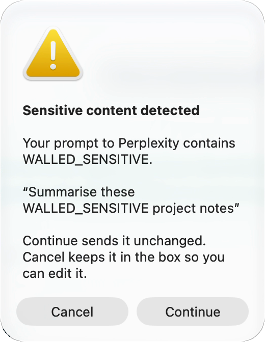

People paste and upload things into AI chat apps that shouldn't leave the company. The task: a lightweight desktop DLP tool that watches ChatGPT Web and Perplexity Web in a normal browser and inspects outgoing prompts and file uploads (text, PDF, images) for the marker WALLED_SENSITIVE.
No marker: the action goes through with no extra step.
Marker found: a native desktop dialog appears before anything is sent. It says whether the marker is in the prompt or a file, shows an excerpt or the file name, and offers Continue and Cancel.
Continue proceeds with the content unchanged.
Cancel blocks the action, and the user can still edit and retry.
AI responses on both sites are also recoloured.
2. Approach
A Chrome extension is the sensor and enforcer: it catches Send and uploads before the page sees them, holds them, and replays or drops them. A Python desktop app is the inspector and decision-maker: it reads files (with OCR), shows a native macOS dialog and keeps an audit log. They talk over Chrome native messaging, and Chrome starts the app on demand.
Figure 1. Components. The extension holds the action; the desktop app inspects and decides.
Alternatives I ruled out
Option
Why not
HTTPS proxy (MITM)
Needs a trusted root CA on the machine. Blocking at the network level leaves the app half-sent and in an error state, with no clean retry. Uploads are often chunked by then.
Driving Chrome over its debugging port
Needs a special profile and leaves a debug port open. Not "a normal browser".
Embedded browser
Not a normal browser either, and Google sign-in blocks embedded web views.
3. Interception: getting there first
Every content script runs at document_start. engine.js registers capture-phase listeners on window for keydown, click, submit, input, change, drop and paste. An event's capture phase starts at window, so these run before anything the page adds further down: React's root listeners and the editors' own handlers (ProseMirror on ChatGPT, Lexical on Perplexity). To stop an action the engine calls preventDefault() and stopImmediatePropagation(), so the page never sees it and its state stays as it was.
Figure 2. Event path. Listeners on window run first in the capture phase.
// Events the engine dispatches itself pass straight through.
// click() and dispatchEvent() are synchronous, so a counter is enough.
let bypass = 0;
function replay(fn) { bypass++; try { fn(); } finally { bypass--; } }
Prompts
Figure 3. Prompt flow. Clean prompts never wait for the desktop app.
Triggers: Enter (not Shift+Enter, not mid-IME), the adapter's Send button, a button labelled Send/Submit next to a composer, or a form submit.
While a dialog is open, further sends from that composer are swallowed.
On Continue, the text must be unchanged, and the approved text may pass again for 5 s in case the app resubmits.
Files
Path
Hold
Replay on Continue
File picker
Stop input and change at window; note which fired
Dispatch them again. Partial cancel: set input.files to a DataTransfer of the allowed files first
Drag and drop
Stop the drop; copy the files at once (the DataTransfer locks after the event)
New DragEvent('drop') with a rebuilt DataTransfer at the same target and position. On Cancel, a dragleave clears the app's overlay
Paste with files
Stop the paste; copy files and any text/HTML
New ClipboardEvent('paste') with a rebuilt DataTransfer
Inspection: files are read with arrayBuffer(), base64-encoded in chunks and sent in one files request. Anything over 25 MB is sent without its bytes, so the app asks instead of passing it.
After a cancelled pick,input.value is reset so picking the same file again works.
Detached inputs: some upload libraries click an <input type=file> that isn't in the document. page-hook.js runs in the page's own world and moves such inputs into a hidden holder just before the picker opens, so their events reach window too.
Site adapters and response colour
sites/chatgpt.js and sites/perplexity.js hold selectors only: composers, send buttons and response containers, each tried in order. I checked them against the live sites in November 2026 with a recon snippet that reads attributes only, never text. Both sites had changed since the first guesses:
ChatGPT:[data-composer-input] [contenteditable], button[type=submit][aria-label=Send], and answers in [data-markdown-text-style="assistant-message"].
Perplexity: a role=textbox editor, aria-label=Submit, and answers in .prose.
response-color.js injects one stylesheet built from those selectors: teal #0f766e in light themes and #5eead4 in dark ones. It follows <html data-theme> on ChatGPT and data-color-scheme on Perplexity, falling back to the system setting. Because it matches containers, streaming text picks up the colour too.
4. Detection
Figure 4. Detection pipeline in the desktop app. If in doubt, ask: a file that can't be read is never treated as clean.
Marker rules
One set of rules, written twice: marker.py, and a line-for-line port marker.js for the in-page prompt check. Both run against the same 30 test vectors.
Exact (prompts, text, metadata): NFKC-normalise, strip zero-width characters and soft hyphens, then match WALLED_SENSITIVE case-insensitively.
OCR-tolerant (text from images and scans): also accepts
1 l | ! for I and L, 5 $ for S and VV for W;
a stray character between letters;
a space or nothing where the underscore was.
Excerpts show about 40 characters either side of the hit.
OCR
macOS Vision comes first: on-device and accurate, with language correction off so the marker isn't "corrected". The host warms it up at start-up. tesseract is the fallback.
Small images are retried at 2–3× size.
PDF pages are rendered at 2× with pdfium, up to 15 pages.
Measured times: a clean PDF in about 2 ms, a text image in about 40 ms, a two-page scan in about 0.3 s.
When the app asks instead of deciding
These files come back as uninspectable and get a dialog that says why:
files over 25 MB;
password-protected PDFs or archives;
damaged files;
zip bombs (over 500 entries or 200 MB unpacked);
no OCR engine available;
scanned pages beyond the OCR limit;
any parser error.
fail_mode: "open" in ~/.upload-guard/config.json lets uninspectable files pass instead. It's off by default.
5. The native dialog

Real dialogs from the demo recording, on Perplexity.
Cancel is the default button: Return and Esc both choose it.
Several flagged files get one dialog that lists them all. Its text says Cancel removes only those files and the others still upload.
Showing it over full-screen Chrome
A full-screen app lives in its own Space, and other apps' windows don't appear there. Four fixes were needed. Each was found by testing, not assumed.
Agent app. The host is an accessory app: it has no Dock icon and is allowed into other Spaces.
Space behaviour and level. The alert window gets CanJoinAllSpaces | FullScreenAuxiliary and status-bar level 25. runModal quietly drops the level to 8, so a timer in the modal run loop sets it back, along with orderFrontRegardless and makeKeyWindow.
Right display. Chrome is the host's parent process. The alert is centred on the display showing Chrome's front window, found through CGWindowList. The first version opened on the other monitor.
Close cleanly. After runModal returns, the host orders the window out and runs the event loop for 150 ms, then hands focus back to Chrome. Without this the dialog stayed frozen on screen after a click. I found that in the live test.
Without screen recording, scripts/check_fullscreen_dialog.py uses CGWindowList and NSWorkspace to check the result. It confirms the dialog is on top of a native full-screen window, on the same display, at level 25, with keyboard focus, and that the full-screen window never left the screen. check_dialog_closes.py answers a real dialog and checks nothing is left behind. If PyObjC is missing, an osascript fallback passes all text as argv, so a file name can't inject AppleScript.
6. Protocol and failure modes
Native messaging
Framing: a 4-byte native-endian length, then UTF-8 JSON, in both directions.
stdout carries protocol frames only. The host keeps a private copy of fd 1 and points fd 1 at stderr, so a stray print can't corrupt the stream.
Threads: a reader thread answers pings at once and queues everything else for the main thread, which AppKit requires. Dialogs therefore queue one at a time.
Service worker: one port, opened on first use. Replies are matched by request id. If the port drops, every waiting request is answered with host_unavailable.
Who can connect: the extension ID is fixed by the key in the manifest, and the host's allowed_origins lists only that ID. The launcher runs Python with -I.
Sent normally: the check in the page doesn't need the app
Prompt with marker, app not running
Blocked, with an in-page notice: "Sensitive Upload Guard app isn't running, blocked"
Any file, app not running
Blocked, because it can't be inspected, with the same notice
Extension reloaded under an open tab
Blocked; the notice asks you to reload the page
File can't be inspected
Dialog explains why and asks
Host crashes mid-request
Port drops → waiting requests fail → blocked
Prompt edited while the dialog is open
Not sent on Continue; Enter re-checks the new text
Two actions at once
Queued; one dialog at a time
7. Security and privacy
Local only. Everything is inspected on the machine, and Vision OCR runs on-device. Content reaches only the site the user chose, and only once allowed.
No content in logs. The audit log (~/.upload-guard/audit.jsonl, mode 0600) records time, site, kind, file name or prompt length, where the marker was, and the decision. Debug logging records decisions and sizes.
Minimal permissions. The extension asks for nativeMessaging and storage, plus host access to the two sites.
A guardrail, not a hard boundary. It catches mistakes, but a user can disable the extension. A company deployment would force-install it with Chrome policy.
8. Testing
Suite
Tests
What it covers
Marker rules (pytest + node:test)
30 + 30
The same vectors against Python and JS: case, zero-width, fullwidth, OCR confusions, near-misses, excerpts
Detectors
33
Generated fixtures:
text: UTF-16 and zero-width;
PDF: marker on page 2, scanned, encrypted, damaged;
images: PNG, a noisy JPEG photo, PNG metadata;
a split-run .docx and a nested zip;
tesseract forced, and no OCR at all.
Native host process
13
Real framing over pipes: ping, prompts, files, mixed batches, queueing, bad input, exit on close. Also checks that the osascript argv can't be injected and that the audit log holds no content
Installer
5
A temporary HOME, the manifest contents, the launcher starting the host, and the extension ID matching what Chromium assigns
Browser end-to-end
33
Real extension and real host in Playwright's Chromium. Mock pages that copy the live markup are served as chatgpt.com and perplexity.ai. Covers every acceptance case on both sites, plus drop, paste, re-picking a file, partial cancel and failing closed
Live
both sites
Manual run on the real sites, recorded for the demo
9. Limitations and next steps
Browsers: Chrome, Chromium, Edge and Brave only. Firefox and Safari need ports.
Platforms: macOS is built and tested. The Windows and Linux dialogs exist but are untested, and Windows also needs registry-based host registration.
Selector drift is the main maintenance cost; both sites changed while I was building this. The next step is a network-level backstop: hook fetch/XHR in the page for the known upload and conversation endpoints.
Upload paths not covered:showOpenFilePicker, file inputs inside shadow DOM, dropped folders and voice prompts. Neither site uses these for normal uploads today.
OCR can miss tiny or handwritten text, and the tolerant match can occasionally flag the two words "walled sensitive" in an image. Only the first frame of a GIF or TIFF is read.
Size: files over 25 MB, or past 40 MB in one batch, aren't inspected; the user is asked instead.